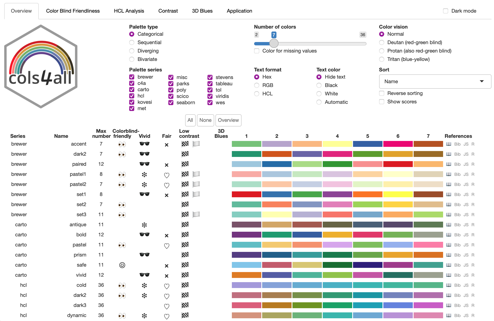

Reading layer `mtq' from data source
`/home/tim/Documents/prj/R_Spatial_Ecosystem/data/mtq.gpkg'
using driver `GPKG'
Simple feature collection with 34 features and 7 fields
Geometry type: MULTIPOLYGON
Dimension: XY
Bounding box: xmin: 690574 ymin: 1592536 xmax: 735940.2 ymax: 1645660
Projected CRS: WGS 84 / UTM zone 20NR Spatial Ecosystem
Feb 26, 2025
Spatial data
Raster
An image located in space.
Geographic information is stored in pixels.
Each pixel, defined by a resolution, has value(s) that can be processed and mapped.

Spatial data
Vector
Geometric objects such as points, lines or polygons.
These vector objects do not pixelate.
Each object has a unique identifier.

Vector and Raster

Ecosystem foundations
Widely used geographic libraries:
- GDAL - Geospatial Data Abstraction Library (GDAL/OGR contributors, 2022)
- PROJ - Coordinate Transformation Software (PROJ contributors, 2021)
- GEOS - Geometry Engine - Open Source (GEOS contributors, 2021)

These are external dependencies
- Installation
- Reproducibility
Consider containerization (Nüst and Pebesma, 2021).
sf package

Published in 2016 by Edzer Pebesma.

Main features
- import / export
- display
- geoprocessing
- support for unprojected data (on the globe)
- use of the simple feature standard
- compatibility with the pipe operators (
|>or%>%)
- compatibility with
tidyverseoperators.
Format
sf objects are data.frame in which one of the columns contains geometries.
This is a very practical format, data and geometries are intrinsically linked in the same object.
Display

Intersection

terra package

The terra package lets you manage vector data and, above all, raster.

Main features
- Viewing
- Study area modifications (projection, crop, mask, aggregation, merge, etc.)
- Spatial algebra (local, focal, global, zonal operations)
- Transformation and conversion (rasterization, vectorization)
Thematic Cartography
Interactive maps

Color palettes
Numerous palettes are available directly in R-base, and almost 70 (!) packages offer palettes.

hcl.colors()paletteer(Hvitfeldt, 2021), 2587 palettes (!!!)cols4all(Tennekes, 2023), shiny app

cols4all::c4a_gui()